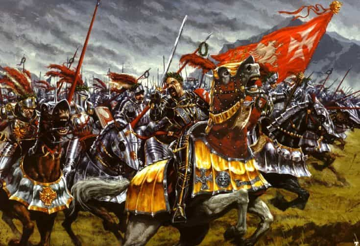
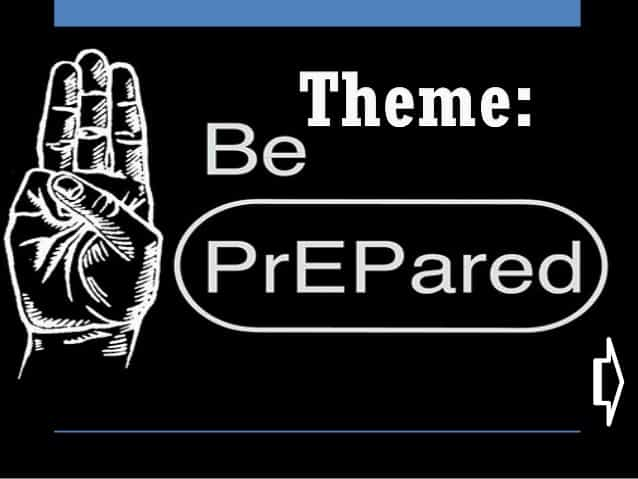
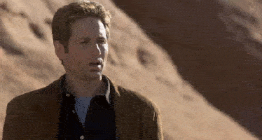

is an aspiring philosopher king, living the dream, travelling the world, hoarding FRNs and ignoring Americunts. He is a European at heart, lover of Latinas, and currently residing in the USA.


Operation Medusa. NSA encryption. Undercover infiltration. Disinformation operations. Transvestite informants. Counterespionage. Squeezing through border checkpoints. Sexy vampire wigs. Operation Goebbels. Conspiracy theories. Canadian government press conferences. Double-agent seductresses. Humor. Ambush and assault. No, these are not elements of the latest spy masterpiece. They are all part of the true story of giving a public talk to men detailed in Free Speech Isn’t Free, to be released by Roosh on Monday.

Quintus Curtius provides a brief, non-ideological historical background, stressing the idea that no, things don’t just naturally eventually end up better over time, but instead history is actively shaped by the actions of those living in it. We all have the power to help shape the direction our society or world is moving in. And if we do not, many things we take for granted, such as free speech, wealth, clean air and water, attractive women, and travel, will be completely foreign ideas to our descendants. As Quintus states “Victories once won are not permanent; they must be re-won by every generation”
The book gives a glimpse into the background, rationale, preparation, and delivery of Roosh’s public lectures in six cities: Berlin, London, D.C. NYC, Montreal, and Toronto. The writing is fluid and thoughtful.
The Germany and U.K. talks were relatively uneventful. A female journalist came to Berlin (I thought women were banned?!) and later wrote an article for Vice in German calling Roosh a rapist, while the London event was attended by the Reggie Yates BBC film crew, who later released a hit piece.
A remake of this would be saner
The Montreal and Toronto chapters, which detail the terror-alert-orange level of backlash against the talks, comprise most of the writing. I was mentally exhausted after reading the Montreal chapter and had to relax outside for a bit before continuing. Through these trials and eventual victory, Roosh developed the plan for a neomasculine movement so men could join together in opposing the harmful changes they see occurring.

As an Eagle Scout, the motto “Be Prepared” is permanently embedded in my mind. And Roosh was prepared for the tricks the protestors pulled. If an event was cancelled, there was a backup plan to release free video of the talk online, which would only draw more attention to the message they were trying to censor. If a hotel hosting an event cancelled, there were already backup locations under consideration. If groups were infiltrated, a private notification and verification system (which was used in Canada) was ready to activate.
Learning from past experiences, such as the ambushing on the Dr. Oz show, and some earlier problems during the Europe talks, Roosh was determined to be prepared for whatever happened in North America. But the enormous backlash could not have been predicted.
At one stop, Roosh has a lengthy talk with a man about a conspiracy to undo Western civilization’s gains. I’m not convinced there is that degree of organization in the world, and the historical theme of QC’s foreword seems at odds with the idea of a planned coordinated worldwide movement to destroy patriarchy. Is there such a coordinated effort? Or do degenerate ideas simply spread like wildfire when a strong masculine culture does not keep them in check?
But as I read on, evidence for deliberate, planned anti-family and anti-cohesive policies piled up. Policies which affected minuscule subminority groups were enacted, and the entire legal system and government were altered to accommodate them, while real issues affecting mainstream men were ignored. Was this just bad luck? Straight white men getting the short end of the stick because we have a black president? Or was there more to it?
Was there a planned and coordinated worldwide agenda of anti-male, anti-family thoughts and practices? Is multiculturalism merely benevolent inclusiveness? An attempt to combine the best of all ideas from disparate groups? Or is it actually an underhanded method of attacking man, family, and Western values?

I expected the book to be about the author’s state of the world, and some ideas for fixing it. Of course, that is part of it, but I was pleasantly surprised and impressed to see Roosh deeply in the midst of a quest for knowledge, asking questions of attendees, delving deeply into ideas, and looking for solutions to the problems we face in modern day life. This isn’t the story of a zealous theorist convinced he has the answers to everything, and forcing them to fit his belief system; instead he is questioning, seeking, being curious, and learning.

As linguist and philosopher Noam Chomsky stated, protections of free speech exist precisely to protect unpopular speech.
If you’re really in favor of free speech, then you’re in favor of freedom of speech for precisely the views you despise. Otherwise you’re not in favor of free speech.
Free Speech Isn’t Free is a narrative, a warning, and a path for our future. It’s troubling that we are living in times where ideas such as health, strength, happiness, family, cohesiveness, and beauty are unpopular, but after reading this book, you will have no doubts that we are. The next step is channeling our forces into something positive.
 If you like this article and are concerned about the future of the Western world, check out Roosh's book Free Speech Isn't Free. It gives an inside look to how the globalist establishment is attempting to marginalize masculine men with a leftist agenda that promotes censorship, feminism, and sterility. It also shares key knowledge and tools that you can use to defend yourself against social justice attacks. Click here to learn more about the book. Your support will help maintain our operation.
If you like this article and are concerned about the future of the Western world, check out Roosh's book Free Speech Isn't Free. It gives an inside look to how the globalist establishment is attempting to marginalize masculine men with a leftist agenda that promotes censorship, feminism, and sterility. It also shares key knowledge and tools that you can use to defend yourself against social justice attacks. Click here to learn more about the book. Your support will help maintain our operation.
Read More: 4 Things You Should Know About Free Speech